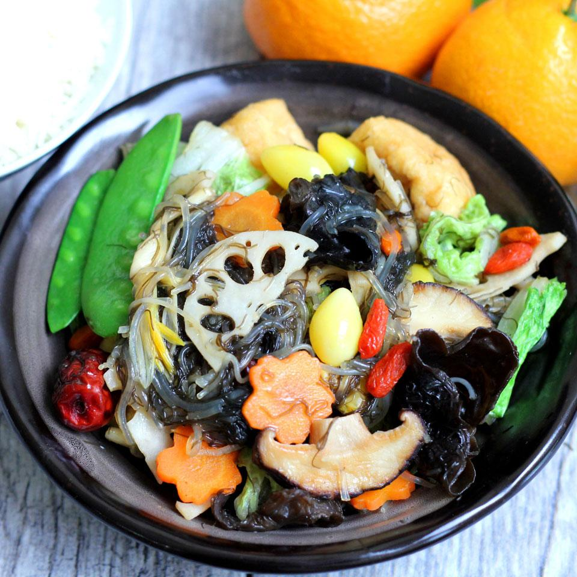

Buddha's Delight

Description
Buddha's Delight or Lo Han Jai is the ultimate vegan stir-fry with delicate flavors and wholesome goodness! Serve with rice.
Ingredients
- ⅔ cup water
- ⅔ fermented bean curd blocks
- 1 tablespoon vegetarian mushroom oyster sauce
- ⅓ teaspoon mushroom seasoning
- ⅙ teaspoon salt
- ⅙ teaspoon cornstarch
- ⅙ teaspoon sesame oil
- ⅙ teaspoon white sugar
- ground black pepper to taste
- 1 teaspoons vegetable oil
- ⅔ (1/2 inch) pieces fresh ginger, peeled and thinly sliced
- 1 ⅓ ounces fried tofu, cut into 4 pieces
- ⅔ ounces lotus root, peeled and thinly sliced
- ⅔ ounces ginkgo nuts
- 1 ounce dried lily flowers, soaked in hot water
- 2 ⅔ dried red dates
- 1 ⅔ fresh shiitake mushrooms, diced
- ⅓ carrot, sliced
- 2 ⅓ ounces napa cabbage, cut into small pieces
- ⅔ ounces snow peas
- ⅔ ounces fresh black fungus
- ⅓ (2 ounce) package cellophane noodles
- 1 teaspoons goji berries, soaked in water
- ⅙ teaspoon salt
- 1 ounce dried black moss (nostoc), rehydrated
Directions
- Mix water, fermented tofu blocks, oyster sauce, mushroom seasoning, 1/2 teaspoon salt, cornstarch, sesame oil, white sugar, and pepper together in a bowl until fermented tofu has dissolved.
- Cook vegetable oil and ginger in a skillet over medium heat for 30 seconds. Add tofu, lotus root, ginkgo nuts, lily flowers, red dates, shiitake mushrooms, and carrot. Cook until golden brown, about 5 minutes. Add cabbage, snow peas, black fungus, noodles, goji berries, and salt. Cook for another 3 minutes. Add moss and fermented tofu mixture; bring to a boil. Remove from heat and transfer to a serving dish.
Nutrition Facts
Per Serving: 542 calories; protein 13.4g; carbohydrates 98.6g; fat 14.5g; cholesterol 0.1mg; sodium 1321.1mg.
Back to Recipes